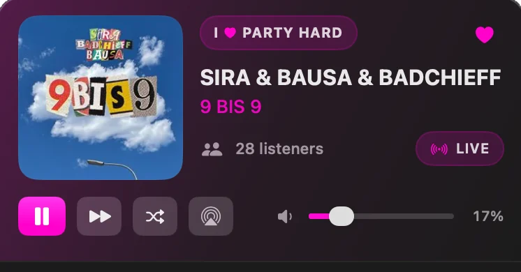
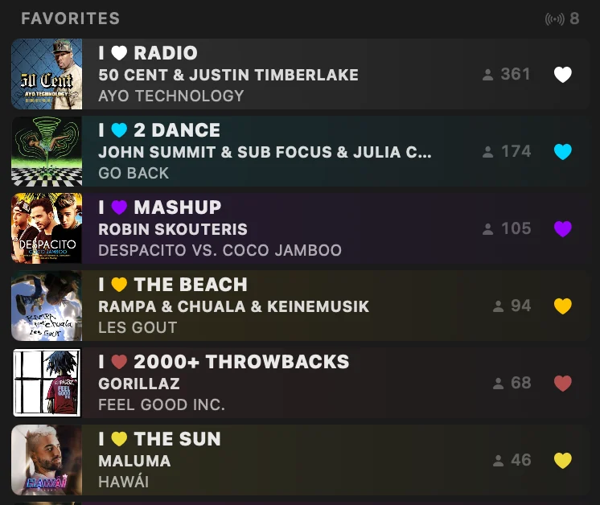
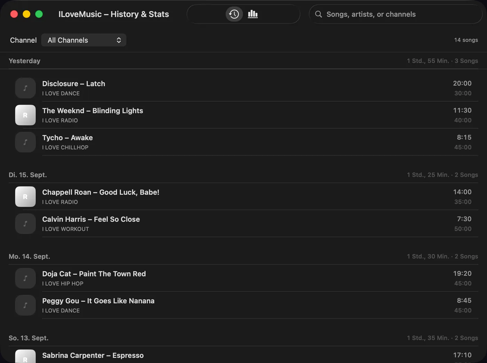
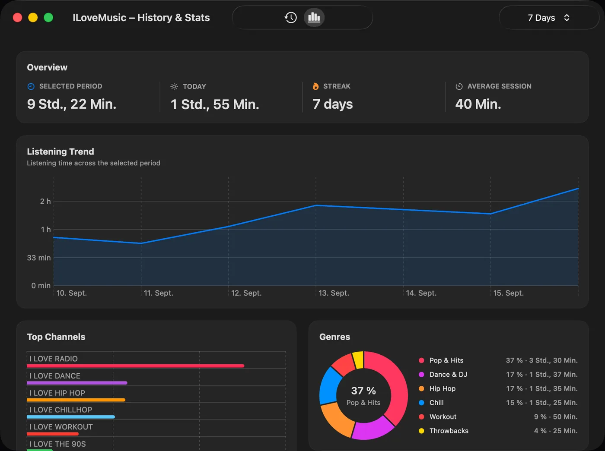
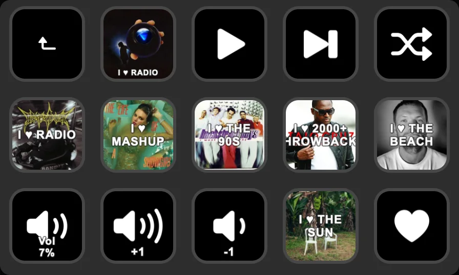

Alles in einem Panel
Cover, Titel, Live-Hörerzahl, Transport, AirPlay und Lautstärke. Kein Hauptfenster, kein Dock-Eintrag.

Radio-Player für macOS
Cover, Live-Hörerzahl, Favoriten und Statistik für alle öffentlichen Sender. Ein Klick aufs Symbol – kein Fenster, kein Account.
Kostenlos & Open Source · macOS 14+ · Apple Silicon · v__VERSION__
Der Katalog kommt live von den öffentlichen ILoveMusic-Endpunkten. Neue Sender tauchen von selbst auf, ohne App-Update.
Cover, Titel, Live-Hörerzahl, Transport, AirPlay und Lautstärke. Kein Hauptfenster, kein Dock-Eintrag.

Favoriten stehen oben, jede Zeile in der Farbe ihres Senders – mit laufendem Titel und Hörerzahl.

Systemweit, auch wenn das Panel zu ist. In den Einstellungen frei belegbar.


Jeder gehörte Song landet im Verlauf. Daraus rechnet die App Hörzeit, Streak, Genres, Top-Sender und Heatmaps.
Alles liegt als Datei auf deinem Mac – kein Backend, kein Account, kein Sync.
Rich Presence setzt den laufenden Song als Aktivität – mit Cover, Sender, Hörerzahl und mitlaufender Spielzeit.
Hört ILoveMusic
9 Bis 9
Sira & Bausa & Badchieff
00:42 elapsed

Jede Taste ein Sender, mit aktuellem Cover als Tastenbild. Dazu Transport, Favoriten-Herz und Lautstärke.
Plugin-RepositoryILoveMusic-__VERSION__.dmg aus den GitHub Releases laden, die App nach Programme ziehen und einmal die Quarantäne entfernen:
Ohne Terminal: App starten, Warnung bestätigen, dann Systemeinstellungen → Datenschutz & Sicherheit → Trotzdem öffnen.
Das Projekt hat keinen Apple-Developer-Account, die App ist nur ad-hoc signiert und nicht notarisiert. Betroffen ist nur der erste Start, der Download selbst ist in Ordnung.
Über Sparkle, im Hintergrund und abschaltbar. Jedes Update wird vor der Installation per EdDSA-Signatur geprüft.
Kein Backend, kein Account. Verbindungen gehen nur zu den öffentlichen ILoveMusic-Endpunkten, zum Stream und – falls aktiviert – lokal zu Discord und zum Stream Deck.
macOS 14 oder neuer auf Apple Silicon, rund 3 MB. Auf Intel-Macs lässt sich das Projekt aus dem Quellcode bauen. Oberfläche auf Deutsch und Englisch, Start bei Anmeldung optional.
Ein unabhängiges Open-Source-Hobbyprojekt ohne Verbindung zur I Love Music GmbH. Marken- und Sendernamen gehören ihren jeweiligen Inhabern.